Κλειδί Gemini για το Kostometro
Για να διαβάζει μόνο του τα ποσά από τη φωτογραφία. Α και Β από υπολογιστή (~5 λεπτά), Γ από το κινητό (1 λεπτό).
| Πληρωμένο | Δωρεάν | |
|---|---|---|
| Ταχύτητα | ~3–4″ ανά τιμολόγιο | αργό, με αναμονές |
| Όταν η Google έχει φόρτο | συνεχίζει κανονικά | συχνά «δοκίμασε αργότερα» |
| Κόστος | περίπου 0,50 € για 100 τιμολόγια | 0 € |
Ενδεικτικό κόστος — εξαρτάται από τις τιμές της Google, που μπορεί να αλλάξουν.
Με δωρεάν κλειδί η ανάγνωση θα είναι αργή και κάποιες ώρες δεν θα λειτουργεί. Η επιλογή είναι δική σου.
Α · Φτιάξε το κλειδί
Υπολογιστής · 2 λεπτά
- Α1
Στον υπολογιστή άνοιξε aistudio.google.com/apikey και συνδέσου με τον λογαριασμό Google σου. Πάτα «Create API key» πάνω δεξιά.
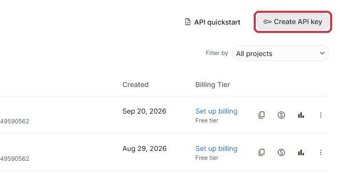
- Α2
Στο όνομα γράψε Kostometro (ή άφησε ό,τι γράφει). Το έργο (project) μην το αλλάξεις. Πάτα «Create key».
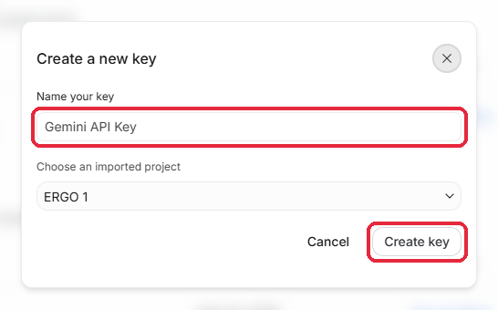
- Α3
Το κλειδί σου φτιάχτηκε. Δεν χρειάζεται να το αντιγράψεις ή να το φυλάξεις κάπου — μένει πάντα εδώ, στον λογαριασμό Google σου. Θα το πάρεις από το κινητό στο βήμα Γ. Κλείσε το παράθυρο.
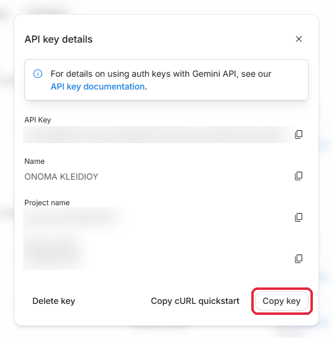
Β · Ενεργοποίησε την πληρωμή
Υπολογιστής · 3 λεπτά · το κλειδί που έφτιαξες δεν αλλάζει
- Β1
Στη γραμμή του κλειδιού, στη στήλη «Billing Tier», πάτα «Set up billing».
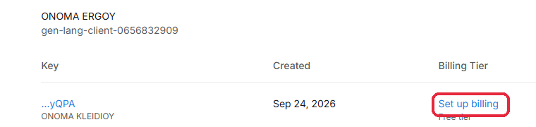
- Β2
Διάλεξε το ίδιο έργο (project) με το κλειδί σου και συνέχισε.
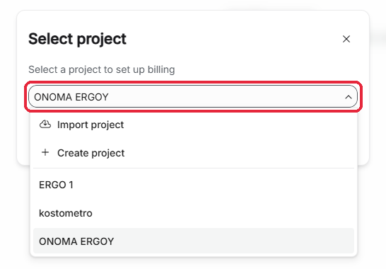
- Β3
Χώρα: Cyprus. Το κουτάκι για διαφημιστικά email άφησέ το κενό. Πάτα «Agree & continue».
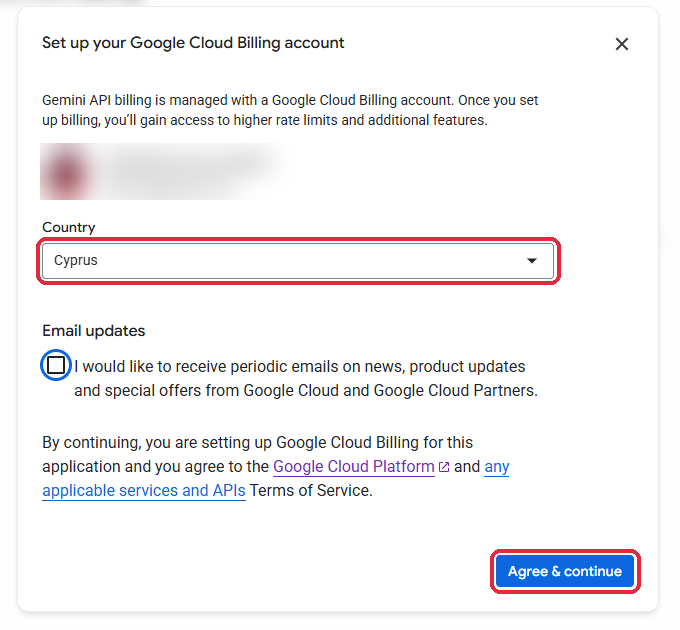
- Β4
Πρόσθεσε την κάρτα σου στο «Card details» και πάτα «Save».
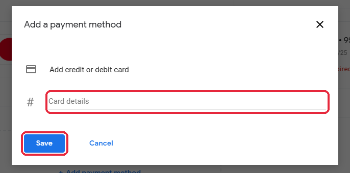
- Β5
Έλεγξε τα στοιχεία σου και πάτα «Submit». Η τράπεζά σου μπορεί να ζητήσει έγκριση στην εφαρμογή της — είναι επαλήθευση της κάρτας.
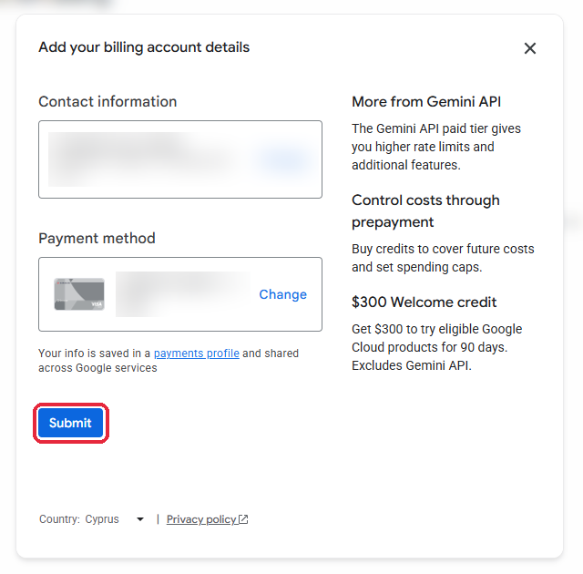
- Β6
Αν η Google δεν σου ζήτησε ήδη να αγοράσεις credits: στη σελίδα Billing πάτα «Switch to prepay» πάνω δεξιά.
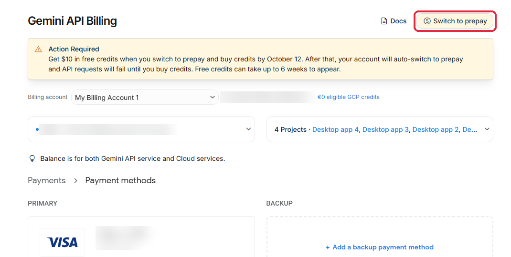
- Β7
Πάτα «Confirm and continue» και αγόρασε credits — προτείνουμε 10 $. Πληρώνεις μία φορά και δεν χρεώνεσαι ποτέ παραπάνω.
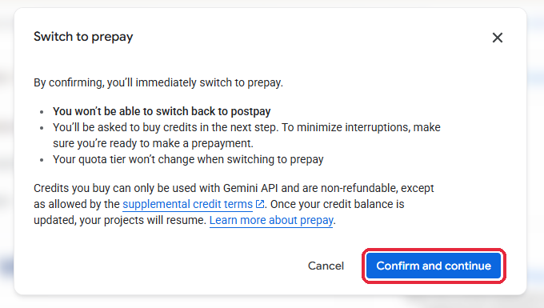
- Τα 10 $ φτάνουν ενδεικτικά για 1.500–2.000 τιμολόγια.
- Τα credits λήγουν σε 12 μήνες και δεν επιστρέφονται.
- Όταν τελειώσουν, η ανάγνωση σταματάει μέχρι να ξαναγεμίσεις (Billing → Buy credits).
Γ · Βάλ' το στο Kostometro
Κινητό · 1 λεπτό
- Στο κινητό άνοιξε aistudio.google.com/apikey και συνδέσου με τον ίδιο λογαριασμό Google.
- Δίπλα στο κλειδί σου πάτα το εικονίδιο αντιγραφής (⧉) — το κλειδί αντιγράφηκε.
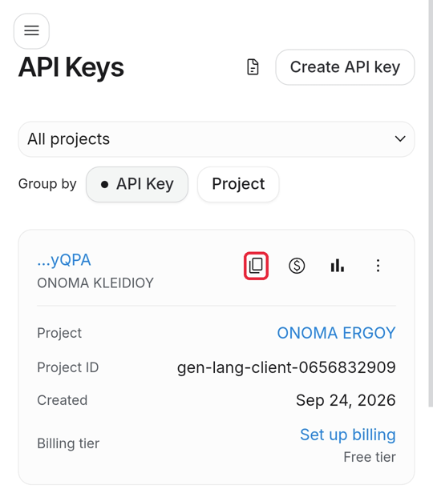
- Άνοιξε το Kostometro και επικόλλησε το κλειδί στο πεδίο «Κλειδί Gemini»:
- Κάνεις εγγραφή τώρα; Το πεδίο είναι στην οθόνη «Να διαβάζει μόνο του τα ποσά;».
- Είσαι ήδη μέσα στην εφαρμογή; ☰ → Ρυθμίσεις → «Κλειδί Gemini».
- Πάτα Αποθήκευση. Τέλος.
Μη στείλεις το κλειδί στον εαυτό σου με email, Viber, WhatsApp ή Messenger — εκεί μένει αποθηκευμένο και μπορεί να το δει κάποιος άλλος.
Ασφάλεια
- Εμείς δεν σου ζητάμε ποτέ το κλειδί.
- Αν νομίζεις ότι το είδε κάποιος: AI Studio → API Keys → ⋮ → Delete, φτιάξε νέο και βάλ' το στο Kostometro.